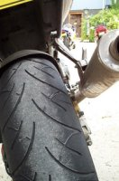
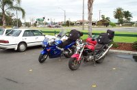
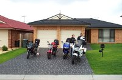
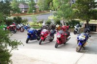
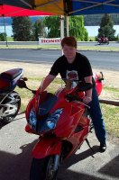
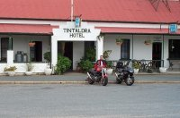

Snowy Mountains 2001
November 17 was the scene of a large fundraising ride centred around Jindabyne in the Snowy Mountains region of NSW and ACT. By the quickest route, that's about 450Km south of where I live in south-western Sydney. That's a little far to do a day trip, considering we were planning 600km of rides in the mountains and wanted to be around for the afternoon presentation at 5pm. Being the bike riders we are, we decided to make a weekend trip - leaving on Friday morning and getting back Sunday evening. It was a brilliant trip and I definitely want to go down there again. This is my ride report that got sent to a few lists, supplemented with photos:
Maaaa, I need a new set of tyres!
Bloody good ride and many bikes. Approx 1500 entries for the weekend, so there was probably just fraction less than that actually attended. In addition, the Triumph mob were having a rally down that way too, so the place was absolutely crawling with bikes.
The most noticable thing - how well behaved every single bike rider was. In the towns behaviour was impeccable. In the entire weekend I did not see one wheelie, stoppie or burnout! Even out on the road everybody was so good. Riders would pull over to let the faster ones through. Those doing the passing would wait for a clean passing oppourtunity and no cutting people up on the insides of corners. I only know of two accidents for the entire weekend (not including a small couple on our ride on the way down - more later).

Yup, that's a worn out rear tyre. Most of the rubber balls have gone
after the highway trip home. Notice the big cut on the right. Not sure
what that is from.
{kind=link}
Personal effort was about 1900km. In that time I completely trashed a rear tyre on the VTR (super-sticky BT010) and the front went from having a flat patch in the center from highway commuting to now being below the wear indicators on the edge. So for me the grin factor is huge.
|

Ready to go a Narellan. |

Waiting for Chris. He didn't show :) |
{kind=link}
{kind=link}
Our trip started at 8am Friday morning meeting at Narellan Maccas (Me - VTR1000, Burnie - Raptor, Sharon - VFR800, Ross - ST1100). Underway by about 8:30 we headed down through Picton and Bowral. Skies started nice a sunny, but by the time we left they were a rather dark grey. As we got to Bowral the clouds started to descend to come have a chat with us. It got to the point where we were doing 40km/h in the fog simply because we couldn't see more than 15m in front. Finding the Kangaroo Valley turn off was one hell of an experience! As leader, I saw the 200m warning sign and slowed down to almost walking pace trying to find it. Suddenly out of the dark came the turn sign to on the left side of the road and I still managed to miss the turn off! Pulling over, we all get into wet weather gear as it's still a bit damp :)
So off we trundle down to Fitzroy Falls, doing all of 60km/h, and less at times, due to the fog. Descending down the valley has the fog clearing, but still plenty of rain. Not the heavy stuff mind you, just that annoying light drizzle. Traffic is pretty light, which is good as it makes dealing with the tricky downhill hairpins in the wet easier.
Getting to the bottom, I switch off and wait for the others. 5 minutes pass by before Sharon trundles in - Ross has had a minor accident. So we head back up the road, only to find Burnie and Ross coming down the hill about 30 seconds later. After pulling up for go-juice at Nowra, the story unfolds. Ross was having a bit of a hard time coming down the mountain at one point (strange, because he was sitting on my rear for most of it and I wasn't going slowly). Seems he came into a corner and had the rear lock up on the wet roads. Released and re-applied three times, each time continuing to lock it up. In the end he's still going a fraction too fast and so elects to go nose first into the drainage ditch at walking pace. All is fine until the momentum stops and the bike lays over on its side. A following pair of riders (ST4 and TDM) see and slow down to help him pick it up. The Ducati performs a mirror image tumble, coming to rest a couple of metres away from Ross. So keen was he to help Ross up that he left his own bike with the engine running, on it's side with tank downhill and doesn't even seem to care that he's just dumped his own bike! Ross quickly tells him to look after himself first (not a good idea to leave an engine running with the oil running in the cylinder head and not the crankcase). Total damage - one plastic crashbar protector, a couple of very minor scratches to the fairing and wounded pride.
From there on, the ride was fairly uneventful. Lunch was to be at Bermagui. Problem was that we'd last filled up at Nowra, and my fuel light had been on for a very long time (219km on a VTR). While Sharon, who was leading, was content to wander off into town, the rest of us staged a mutiny and headed to the second petrol station we found - after she had ridden past the first one to our dismay! I obviously had nothing to worry about because there was still half a litre of fuel in the tank.....
After a yummy lunch (hamburgers all-round) off to Bega. _Lovely_ roads in this part of the world. Burnie and I take off and roll with the sweepers - 75/85 marked. From Bega, it's up the Snowy Mountains Hwy and Brown Mountain. What a wonderful piece of road :) Climbing up presented few problems, except for a petrol tanker and a couple of bike learners. The higher we got, the more the fog (actually, just low cloud)came in again. Ross reported not being able to see the front of the tanker it was that thick at times (being a few minutes ahead by that stage, it was not that bad for me). As we crested the mountain, the fog lifted and went into glorious full sunshine. From there it was a full high-speed run to Cooma. Being the complete hoon I am, that passed very quickly - including passing a cop car going in the opposite direction at well over "Tear up license and go straight to jail" speeds - and all they did was wave! Seems the police knew there was a ride on there during the w/e and were letting us go (found out later the Coffs Harbour police unit were having a ride w/e there too). Ooh, lookee here, there's some nice melted rubber on rear tyre :) and one very second-hand feeling rear shock (no damping at all).

Bikes everywhere. This is just the parking lot of our accomodation. What
it doesn't show is how steep that area is. All bikes are in gear to stop
them rolling off the sidestands.
{kind=link}
Through to Jindabyne for our accommodation (Mad Moose Backpackers) and Burnie gets relegated to another place, because he's just a slacker and not very organised at all. :P Dinner is had at the Brumby Bar after taking a walking tour of Jindabyne. Ross crashes out early as he left home at 5:20 to meet up with us (he's from Newcastle). Cheesecake and port finishes off the evening and a few games of pool back at the accommodation.
Saturday morning starts off well. All up and breakfast underway by 7:30, except Sharon who just couldn't be woken up - even after shaking the bed like an earthquake. Down to the sign up area and purchasing the obligatory T-Shirt by 8:30. Sharon and Ross sign up for test rides on the new VFR9^H800 so Burnie and I head off toward Kancoban. Nice bit of road this. Lots of downhill stuff and see the first of the accidents. Bike feeling good, rider enjoying himself, getting used to these fun roads (WA does _not_ have roads like this!). The last 40k into Khancoban is a ripper, and quite technical - lots of blind lefthanders with the wall right on the edge of the road, so you have to ride quite a long way towards the middle of the road. Only had one incident that was worth mentioning. Kayaking bus coming around the left handed corner in the opposite direction was on my side of the road and I happen to find one of the only patches of road with potholes mid-corner so the front starts to drift towards the bus. Miss by a couple of metres, but the only thing that rated in the sphincter-puckering scale. Quite a few bikes, but nobody cutting corners and straying onto the wrong side of the road - quite unlike The Old Road...
|  |  |
| Sharon trying out the new VFR, to see if it as good as her old one. | Burnie with our bikes outside the well-known pub. The owner is a mad Ducati fan and welcomes bike riders of all types. |
{kind=link}
{kind=link}
Meet a Khancoban with Burnie again and then we do our detour out to Tintaldra. Boring-ish ride out here. Take the photo and then get advice to go via Tooma rather than backtrack towards Cabramurra. After some odd map reading (note that maps do not necessarily relate to the locality that is printed on the cover) we find ourselves flying through a bunch of sweepers. Nothing too odd here except there's a pile of cars having some sort of rally coming in the opposite direction (big stickers on 'em and stuff).
Both of us are wondering if the guy has been bullshitting us. Lots of sweepers is OK, but some tight twisty stuff would be good. Oh, there's it is and bang from 170km/h sweepers to first gear tight corners in about 2 turns. That's better! 50 odd km later and we pull into Cabramurra to refuel. The last 4km in is lovely smooth hotmix so it was quite a fun little ride.
Next stop Adanimaby (try saying that sober, impossible when pissed!) via the Snowy Mountains Hwy. What a fucking amazing piece of road!!!! Smooth, hotmix, not a single pothole or repair, and 8 foot high oragne poles to tell you where the road is going for the next 2 or 3 turns. That run was serious hoon business. Several times I have to pick my knee up to make sure it doesn't impact with the road surface (just in Draggin's, left the (brand-new) leathers at home this weekend). Pulling up to fill up with more petrol (104km == 12.5L!) reveals a rather shredded rear tyre and the front ain't looking much better either. Big streamers of rubber hanging off the rear. Lunch and I head off to Jindabyne to hand my card in.
More fun was had here - big open sweepers, and again another cop car passes by and waves to me. Back a Jindabyne and it's only 3pm. Too early to retire so I head off down to Dalgety and back to Berridale. Pick up another card and more stamps and reverse the trip to arrive back at about 4pm. Meet Burnie there and we show each other our handiwork while sitting on the bank watching bikes ride by.
Some time later we meet up with Ross and Sharon, clean up and head down for the presentation. No winners in our group (well, I'm just a big loser so everyone tells me...) and then wander off trying to find some food. In the crowd, catch up with Tony and Maggles (aus.moto folks) and have dinner at Clancies. Rather riotous afair was then had. Sharon and Rachel lost the plot completely while Tony and I baited each other and Burnie. :) A couple of games of pool (met up with John Littler and g/f Alison) and more alcohol later and it's time to fall asleep.
Up early again and Sharon wakes up on time today. Breakfast and discussions on plans. As we eat breakkie, the rain arrives - and the wind. Considering that the rain drops were travelling horizontally passed the windows, we decide to scrap plan 1, which was back up the Snowy Hwy. Ross and Sharon elect for the fast trip home through Canberra, Burnie and I go via the coast to head away from the weather.
Leaving Jindabyne, the rain was still travelling parallel to the ground, but 20 minutes out and it was bright sunshine and dry roads. More hooning was had, but the very strong crosswinds made it difficult to be really stupid on the roads. Down Brown Mtn and basically the reverse route of the Friday trip. After Bega, had a fun ride with a group of Ducatis blasting through the hills. Still very little traffic, so it was pretty good fun.
Stopping at Moruya to fill up, we decide to take a quick detour at Batemans Bay and do the run up the hill to Braidwood and back. Another excellent run :) Now my rear tyre is completely shot, and so's the rear shock. (still waiting for the bloody Ohlins to turn up 8 weeks after I ordered it!) Lunch at Ulladulla and then the trip back to Camden is through Kangaroo Valley, just to polish of the bits of the tyre that I may have missed on the rest of the trip. Arrive home at about 6pm. Wonderful time. Definitely recommend you all attend the trip next year. I'm definitely interested in doing an overnighter to that area some time in January. Will take leathers and kneesliders next time....
So, an expensive weekend for me. About $400 for food, accommodation and petrol. Another $500 for a complete set of tyres, and (if I was to rebuild my current shock, which I'm not) $400 for a rear shock. The last two items were expenses already planned, but have happened a little earlier than expected. If you need a nice grippy road tyre, I can very highly recommend the 010. The 207s that I had before these were just a piece of crap. I would never buy or recommend set of them. Huge amounts of grip on standard road surfaces, and held their grip even at high lean angles and wide open throttle. Considering the absolute flogging I gave them over the weekend, good amounts of wear. Approx 11,000km for the front and 7,500km for the rear. Bring on the track day next weekend! (Being run by two Camden locals - Garry McCoy and Mat Mladin).